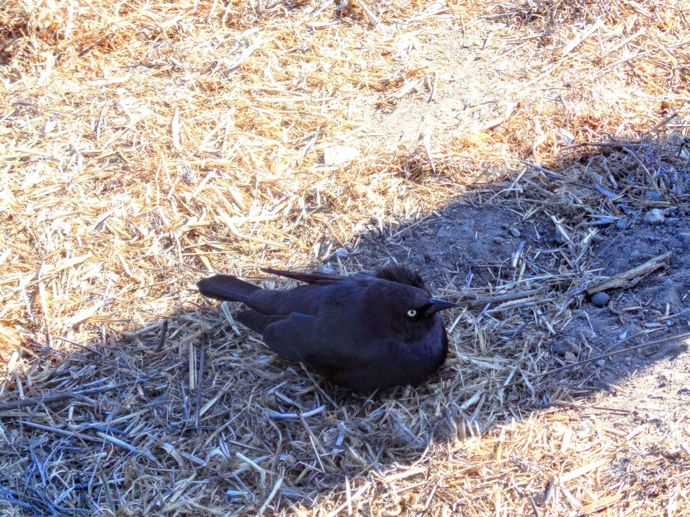

36°58'19''N 122°1'35''W,
largest city of Santa Cruz County, California, USA, situated on the northern edge of Monterey Bay.

Crow near the West Cliff DriveSea lions at the Santa Cruz WharfSea lions at the Santa Cruz WharfSeagull at at the Santa Cruz WharfBlack-tailed deer near
the University of California, Santa CruzBlack-tailed deer near
the University of California, Santa CruzBlack-tailed deer near
the University of California, Santa CruzSea lions at the Santa Cruz Wharf